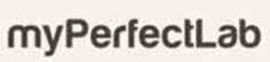

Trade Mark Journal No.2026/008 20 February 2026
UK00004334061 2 February 2026 (3,5)

- Class 3
- Antiperspirants [toilet requisites]; antiperspirant sprays; deodorants and antiperspirants; antiperspirants for personal use; fragrances; fragrances [aromatic oils]; balms for cosmetic purposes; balms, other than for medical purposes; towelettes impregnated with cosmetic lotions; towelettes impregnated with cosmetic preparations; facial tissues impregnated with cosmetics; moist wipes impregnated with cosmetic balm; towelettes impregnated with skin cleansing preparations; towelettes impregnated with make-up removing preparations; towelettes impregnated with essential oils for cosmetic use; lemon essential oils; deodorants for humans; deodorants for humans and animals; reed diffusers; floral extracts [perfumes]; herbal extracts for cosmetic purposes; sun-screening emulsions; cosmetics; beautifying cosmetics; natural cosmetics; cosmetics for eyelashes; cosmetics for eyebrows; make-up cosmetics; cosmetics for children; cosmetics for personal use; skin care cosmetics; skin care creams [cosmetics]; cosmetic creams; skin whitening creams; cosmetic masks; facial cleansing milk; cleansing milk for cosmetic purposes; soaps; perfumed soaps; scented soaps; anti-perspirant soaps; toilet soaps; cosmetic soaps; soaps and gels; liquid soaps for bathing; body care soaps; anti-perspirant soaps for feet; deodorant soap; shaving soap; almond soap; hair conditioners; hair care conditioners; hair oils; oils for cosmetic purposes; oils for perfumery purposes; oils for perfumes and fragrances; essential oils; essential oils for personal use; essential oils for cosmetic use; cedarwood essential oils; toilet oils; hair care lotions; preparations for intimate hygiene or for deodorizing purposes [toilet requisites]; bath preparations; cosmetic bath preparations; non-medicated bath preparations; hair curling preparations; gloss-imparting preparations; fumigation preparations [perfumes]; nail care preparations; preparations for the care of skin, eyes and nails; collagen preparations for cosmetic purposes; cosmetic bath and shower preparations; cosmetic slimming preparations; breath freshening preparations for personal hygiene; astringent preparations for cosmetic purposes; toilet preparations; perfumed balms [toilet preparations]; non-medicated cosmetics and toilet preparations; perfumed body balms [toilet preparations]; perfumery products; perfumery and essential oils; bath salts, not for medical purposes; shampoos; dry shampoos; body shampoos; shampoos for animals; shampoos for babies; solid shampoos; shampoos for personal use; artificial nails; artificial nails for cosmetic purposes; non-medicated cleansing preparations for intimate hygiene; tooth cleaning preparations; tooth cleaning preparations and mouth rinses; air fresheners [fragrances]; massage candles for cosmetic purposes; cologne; disposable wipes impregnated with cologne; lavender water; eau de parfum; eau de toilette; floral water; micellar water; javelle water; cosmetic sets; nail polish removers; nail polish removers [cosmetics]; nail polish remover pens; hair gels; shaving gels; make-up removal gels; hair styling gels; teeth whitening gels; gels for cosmetic use; hair fixing gels; massage gels, other than for medical purposes; gel eye patches for cosmetic purposes.
- Class 5
- Dietary supplements and dietetic preparations; dietetic foods adapted for medical purposes; food supplements; dietary and nutritional supplements; dietetic substances adapted for medical use; food for medically restricted diets; dietary and nutritional preparations; nutritional supplements; dietetic foods adapted for invalids; probiotic supplements; prebiotic supplements; probiotic bacterial formulations for medical use; herbal supplements; colostrum supplements; mineral dietary supplements; calcium supplements; vitamin supplements; albumin dietary supplements; whey protein dietary supplements; protein powder dietary supplements; protein supplement shakes; protein dietary supplements; soy protein dietary supplements; mineral nutritional supplements; vitamin and mineral supplements; mineral dietary supplements for humans; health food supplements for persons with special dietary requirements; dietetic preparations adapted for medical use; liquid herbal supplements; dietary supplements for human beings; health food supplements made principally of vitamins; health food supplements made principally of minerals; nutraceuticals for use as a dietary supplement; food supplements consisting of trace elements; dietary supplements for humans not for medical purposes; nutritional supplement meal replacement bars for boosting energy; powdered nutritional supplement drink mix; vitamin drinks; tisanes [medicated beverages]; dietary supplemental drinks; herbal beverages for medicinal use; electrolyte drinks for medical purposes; dietetic beverages adapted for medical purposes; thermal water; mineral waters for medical purposes; medicinal tea; slimming tea for medical purposes; herbal teas for medicinal purposes; diet capsules; slimming pills.
FM World Sp. z o.o.
Representative: Foot Anstey LLP